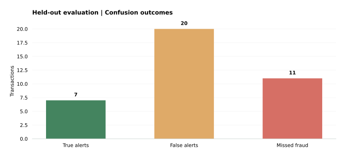

01 / Business question
How can investigators prioritise suspicious activity without overwhelming the queue with false alerts?
A reproducible transaction risk-scoring experiment. The focus is investigation capacity, false alerts and missed risk, not inflated accuracy claims.
02 / Analytical approach
- Simulate time-stamped activity and retrospective labels with a known random seed.
- Use only event-time features; keep the synthetic fraud label out of the inputs.
- Split chronologically (60% training / 20% validation / 20% test).
- Select a classification threshold on validation data, then evaluate once on test data.
- Compare a simpler alert rule and report precision, recall and review capacity.
03 / Results from generated data
On the 960-transaction test set, the classifier flagged 27 records, of which 7 were labelled fraudulent. Precision was 25.9% and recall was 38.9%. This is a deliberately transparent result: investigators would still face 20 false alerts, while 11 synthetic fraud events were missed.

04 / Recommended actions
- Use risk scores as a triage aid, not an automatic accusation.
- Review alert capacity alongside precision and recall, not accuracy alone.
- Monitor drift in transaction velocity, device signals and alert quality.
05 / Limitations
Synthetic labels are generated by engineered relationships. Test results are not transferable to real customers without validation, governance and monitoring.